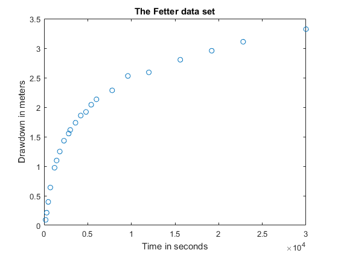
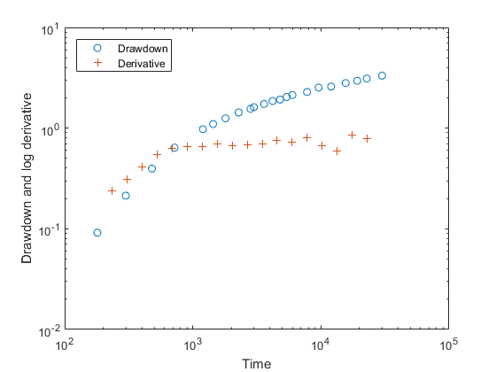
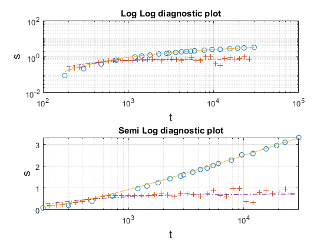
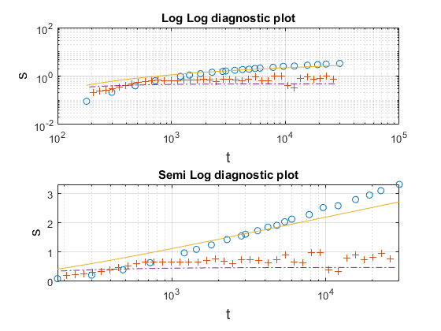
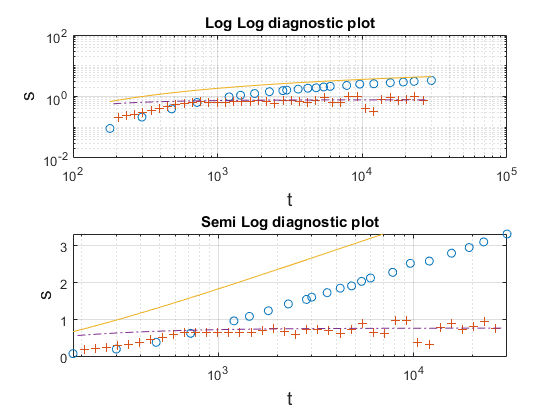
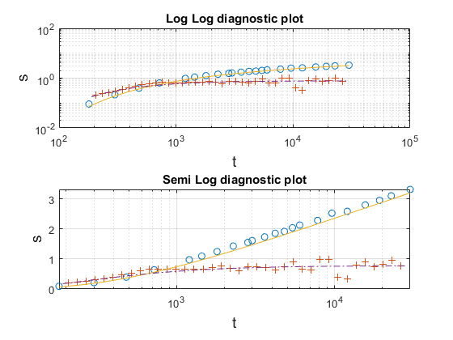
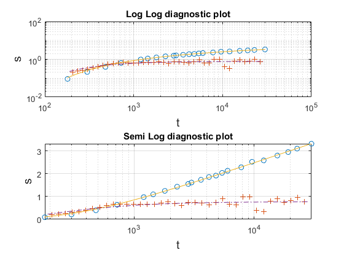
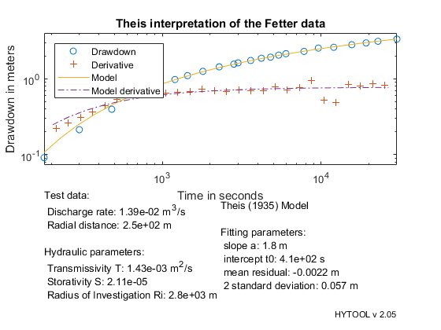

Theis (1935) interpretation.
This is a demonstration of the interpretation of a pumping test with the Theis (1935) solution.
MIT License Copyright (c) 2017 Philippe Renard - University of Neuchâtel (CHYN)
Contents
Load the data
The data set for this example has been typed from: Table 5.1, page 172 in the following book: C.W. Fetter, 2001, Applied Hydrogeology, Fourth Edition. Prentice Hall, Upper Saddle River, 598 pp.
The data is stored in the ascii file 'ths_ds1.dat' that contains two columns as we can see if we edit the data file with the command edit. The first column is the time in seconds. The second column contains the drawdown in meters.
edit ths_ds1.dat
| HYTOOL Demo |
Let us now load the data in the matlab workspace with the ldf function from hytool. This allows to create two vectors: t and s containing the data. We will use them in the next steps, but we can first plot them to check graphicaly that they have been correctly loaded.
[t,s]=ldf('ths_ds1.dat'); clf plot(t,s,'o') xlabel('Time in seconds') ylabel('Drawdown in meters') title('The Fetter data set')
Diagnostic plot
In order to display the diagnostic plot of the data, we use the function diagnostic(t,s) provided by hytool.
diagnostic(t,s,20,'d') diagnostic(t,s) % The plot shows a typical 2D infinite acting radial flow. % The derivative stabilizes at late time and the derivative is larger than % the drawdown at early time. % % We will therefore interpret the data with the Theis (1935) solution % that allows to model such behaviour.
Hytool syntax
The syntax of hytool uses some basic convention that needs to be explained. Most of the functions have names that are made with a suffix and a prefix.
The prefix is a set of three letters that represent a certain model. For example, for the Theis (1935) model we use the letters ths. For the Papadopulos Cooper (1967) model for large diameter well, we use pcw.
The suffix indicates what the function does. For example, the action can be: guess the values of the parameters, in that case the suffix will be gss. If the action is report the results of an interpretation the suffix will be rpt.
With that convention we will have functions such as ths_gss, ths_rpt, pcw_gss, etc.
Along this tutorial, you will discover some functions that are applied to the Theis (1935) model. Try to remember the names of the suffix, they are general and will be applicable to other models.
Model parameter guess
In order to determine the value of the Theis model parameter, we first use the function ths_gss(t,s) to estimate roughly an initial guess p0.
For the Theis (1935) model, the parameter vector contains two values: the first is the slope a of the late time straight line, while the second parameter is the time t0 at which this straight line intercept the axis s=0.
p0=ths_gss(t,s)
p0 =
1.6872
332.4726
To check visually the quality of this first guess, we then plot the model corresponding to these parameters and the data with the hytool function trial. The function trial can be applied for any model and therefore it requires that the name of model 'ths' is provided together with the values of the parameter p0 and the data. 'ths' is the name of the function that computes the drawdown from p0 and t.
We see in the resulting figure both in log-log and semi-log scale that the fit is already pretty good for this example.
trial('ths',p0,t,s)
 Manual parameter adjustment
In this example, the initial guess provided by ths_gss is good. However, in practice it may happen that it does not provide a reliable result. One can then change manually the values of the parameters and modify them iteratively until he obtains a reasonable first fit.
Let us show the procedure.
We start with a first value of the parameters, and make the plot. We see on the graph that the slope is too small and should be increased. We need to modify it.
p0=[1.1,100];
trial('ths',p0,t,s)
 Therefore we increase the slope to 1.8 and plot the result.
The slope seems to be better but the straight line is shifted too much to the left. We must increase the value of t0 (the time at which the straight intercept the horizontal axis) in the next iteration.
p0=[1.8,100];
trial('ths',p0,t,s)
 Let us change it to 500, and plot the results. We obtain a rather good fit even if it is not perfect.
p0=[1.8,500];
trial('ths',p0,t,s)
 Model parameter identification
In the previous steps, we obtained a rough initial guess that is used here as an initial value in an iterative non linear optimization technique to fit the model to the complete data set. This is done with the hytool function fit.
We see visually that the fit has been improved. The values of the parameters have slightly changed.
p=fit('ths',p0,t,s) trial('ths',p,t,s)
Norm of Norm of
Iteration SSE Gradient Step
-----------------------------------------------------------
0 0.319013
1 0.0206002 0.577263 92.0879
2 0.0169288 0.00323874 4.46954
3 0.0169287 6.04055e-07 0.0410354
4 0.0169287 7.94434e-10 0.000815964
Iterations terminated: relative change in SSE less than OPTIONS.TolFun
p =
1.7856 412.3414
 Reporting the results
The interpretation is finished. We need to report the results. This is done with the function ths_rpt(p,t,s,d,title). The function needs the values of some additional data to compute the Hydraulic parameters. For the Theis solution, we need the pumping rate q and the radial distance r between the pumping well and the observation well.
q=1.3888e-2; % Pumping rate in m3/s r=250; % radial distance in m ths_rpt(p,t,s,[q,r],'Theis interpretation of the Fetter data')
The estimated transmissivity is 1.4e-3 m2/s and the storativity is 2.1e-5. These numbers compare well with the values estimated by Fetter (2001) which are the following:
Type curve matching (p.173): T = 1.5 e-3 m2/s S = 2.4 e-5
Straight line analysis (p. 174-175): T = 1.5 e-3 m2/s S = 1.7 e-5
Summary
Even if this demo was quite long because hytool offers the possibility to act at many different levels during the process, the important thing to remember is that the interpretation itself including loading the data and producing the report, is done in 4 lines of code. Once this is done, the user can edit the figure interactively and save it in a graphhical file.
[t,s]=ldf('ths_ds1.dat'); p0=ths_gss(t,s); p=fit('ths',p0,t,s); ths_rpt(p,t,s,[q,r],'Theis interpretation of the Fetter data')
Norm of Norm of
Iteration SSE Gradient Step
-----------------------------------------------------------
0 0.0780946
1 0.0190964 0.240161 63.6098
2 0.0169302 0.0119199 16.0705
3 0.0169287 2.81735e-06 0.192545
4 0.0169287 4.75947e-09 0.00407839
Iterations terminated: relative change in SSE less than OPTIONS.TolFun